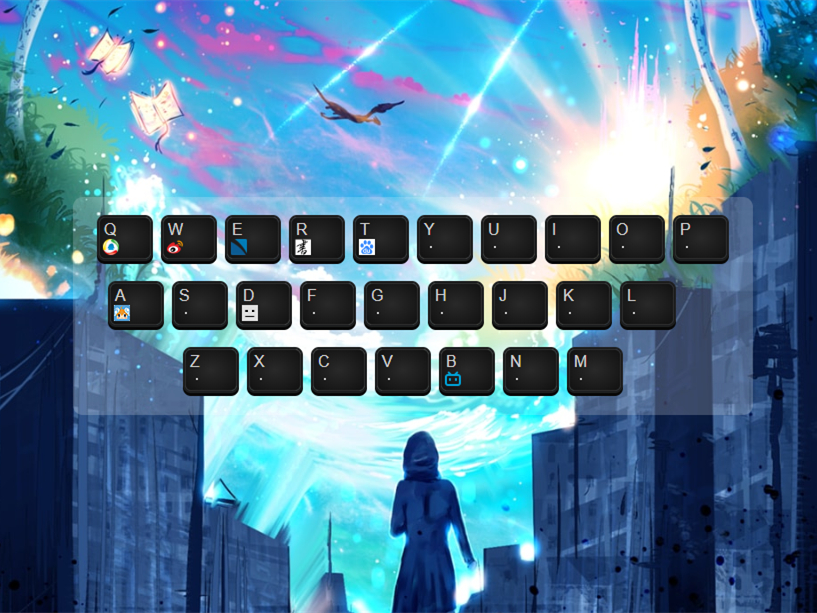
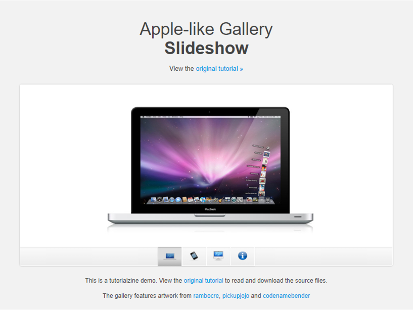

RS
card
关于
技能
作品
作品1
作品2
作品3
博客
博客1
博客2
博客3
日历
內容
其他
Hello
林智兴
前端开发工程师
年龄
23
所在城市
福州
邮箱
mz374427166@gmail.com
手机
15606019207
下载 PDF 简历
林智兴，前端初学者，前端学员，现在在饥人谷学习前端课程。
技能：html学习中，node.js初级学习，CSS学习中。
技能
HTML5 & CSS 3
JavaScript
jQuery
vue.js
React.js
Node.js
作品集
  ...